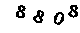
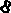
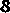
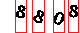
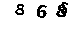
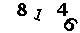

Python识别web验证码
背景
最近公司新项目需要搭建一个自动化测试框架，于是研究了一下selenium这个自动化测试工具，用python写了一个操作网站完成登录的逻辑。输入用户名、密码点解登录，这些都可以由程序自动完成，但是我们的网站是有验证码的，必须手动输入验证码才能成功登录。这就让测试不是真正意义上的“自动化”了，看到我们网站的验证码由固定的四位数字构成，觉得识别起来不是特别难，所以个人决定用python写一个简单的验证码识别工具，现总结如下
工具
获取训练数据
训练数据直接用urllib在web上抓取验证码的图片。这些图片首先要进行灰度化处理，然后根据阀值将灰度图二值化，片变成黑白图片，代码如下：
import urllib
import StringIO
from PIL import Image
import os
#存放训练数据
if not os.path.exists('training'):
os.mkdir('training')
for i in xrange(100):
#网络上的图片转换成Image对象
image = Image.open(StringIO.StringIO(urllib.urlopen(
'http://www.xxxx.com/captcha/sigin/%d' % i).read()))
#灰度化处理
#有很多种算法，这里选择rgb加权平均值算法
gray_image = Image.new('L', image.size)
#获得rgb数据序列，每一个都是(r,g,b)三元组
raw_data = image.getdata()
gray_data = []
for rgb in raw_data:
value = 0.299 * rgb[0] + 0.587 * rgb[1] + 0.114 * rgb[2]
#value就是灰度值，这里使用127作为阀值，
#小于127的就认为是黑色也就是0 大于等于127的就是白色，也就是255
if value < 127:
gray_data.append(0)
else:
gray_data.append(255)
gray_image.putdata(gray_data)
gray_image.save(os.path.join('training','%d.png' % i))
image.close()
gray_image.close()
网页上原始数据：

处理过的图片如下：

分割图片
二值化后的图片需要拆分，将每个数字拆分到单独的图片中，这里采用的是x轴投影的办法拆分数字的，代码如下：
#图片x轴的投影，如果有数据（黑色像素点）值为1否则为0
def get_projection_x(image):
p_x = [0 for x in xrange(image.size[0])]
for w in xrange(image.size[1]):
for h in xrange(image.size[0]):
if image.getpixel((h,w)) == 0:
p_x[h] = 1
return p_x
#获取分割后的x轴坐标点
#返回值为[起始位置, 长度] 的列表
def get_split_seq(projection_x):
res = []
for idx in xrange(len(projection_x) - 1):
p1 = projection_x[idx]
p2 = projection_x[idx + 1]
if p1 == 1 and idx == 0:
res.append([idx, 1])
elif p1 == 0 and p2 == 0:
continue
elif p1 == 1 and p2 == 1:
res[-1][1] += 1
elif p1 == 0 and p2 == 1:
res.append([idx + 1, 1])
elif p1 == 1 and p2 == 0:
continue
return res
#分割后的图片，x轴分割后，同时去掉y轴上线多余的空白
def split_image(image, split_seq=None):
if split_seq is None:
split_seq = get_split_seq(get_projection_x(image))
length = len(split_seq)
imgs = [[] for i in xrange(length)]
res = []
for w in xrange(image.size[1]):
line = [image.getpixel((h,w)) for h in xrange(image.size[0])]
for idx in xrange(length):
pos = split_seq[idx][0]
llen = split_seq[idx][1]
l = line[pos:pos+llen]
imgs[idx].append(l)
for idx in xrange(length):
datas = []
height = 0
for data in imgs[idx]:
flag = False
for d in data:
if d == 0:
flag = True
if flag == True:
height += 1
datas += data
child_img = Image.new('L',(split_seq[idx][1], height))
child_img.putdata(datas)
res.append(child_img)
return res
分割后的图片如下：
 
X轴投影分割原理：

当然这种方法缺点也是有的，如甚至是这样的数据就不能正确分割成四个数字的，更好的算法是连通图算法（我不会~）
整理训练数据作为样本
本来还需要对数字进行一些标准化的运算，对随机旋转，随机扭曲，随机缩放的标准化有不同的算法，为了简单（其实是我不会），只对缩放进行标准化，也就是把每张图片resize到相同的大小。 然后将这些数字人为的识别，放到对应的目录中（由于算法比较简陋，为了准确率高，抽样的数据尽量多，我是0-9每个数字放50个样本）
识别验证码
有了这些样本数据，我们就可以开始识别验证码了，使用selenium封装的chromedriver控制chrome浏览器打开登录界面，但是我没有找到selenium直接保存标签图片的方法（不知道有没有，没深入学习），验证码的url每次得到的图片是不同的，也不能直接用urllib.openurl打开
的src，所以我使用了selenium的截图功能。
截图不能截局部图，只能截整个浏览器，而我计算验证码的位置是写死在程序里的，不具有通用性，不知道有没有更好的办法。
截图分割，然后将单独的数字与样本数据对比，这里采用简单的算法（复杂的我不会），逐个像素对比，相同像素多的即为结果。
代码如下：
from selenium import webdriver
import StringIO
#获得chrome驱动
browser = webdriver.Chrome()
#打开登录界面
browser.get('http://www.xxxx.com/sigin')
#获得截图数据
screen_shot_data = browser.get_screenshot_as_png()
image = Image.open(StringIO.StringIO(screen_shot_data))
#得到验证码区域
#（写死在程序里，并且由于屏幕分辨率不同，不具有通用性）
captcha_img = image.crop((787, 239, 867, 272))
#从文件系统中加载样本数据
trained_data = []
for i in xrange(10):
trained_data.append([])
dir = os.listdir(os.path.join('trained','%d'%i))
for file in dir:
fn = os.path.join('trained','%d'%i, file)
img = Image.open(fn)
trained_data[i].append(list(img.getdata()))
img.close()
#比较单个数字(算法非常暴力，跟全部样本比较
#并且没有数据大小标准化，选择相同像素最多的作为结果
def _analise(image, trainned_data):
res = -1
total_same = 0
data = list(image.getdata())
for num in xrange(len(trainned_data)):
for per_img in trainned_data[num]:
idx = len(data)
if idx > len(per_img):
idx = len(per_img)
same = 0
for i in xrange(idx):
if data[i] == per_img[i]:
same += 1
if same > total_same:
total_same = same
res = num
return str(res)
#分割，比较
def analise(image):
cimgs = split_image(image)
res = []
for cimg in cimgs:
res.append(_analise(cimg, trainned_data))
cimg.close()
image.close()
return res
结果
测试了一下这个程序，识别率大概50%，作为自动化测试登录流程算是可以使用了，10次之内就可以登录；但是如果用到12306这样的网站上抢火车票的话就不太能接受了。 可以优化的地方有很多，如字符分割、标准化算法等，以后有时间再慢慢研究，提高一下准确率。
参考
常见验证码的弱点与验证码识别 http://www.2cto.com/Article/201306/220563.html